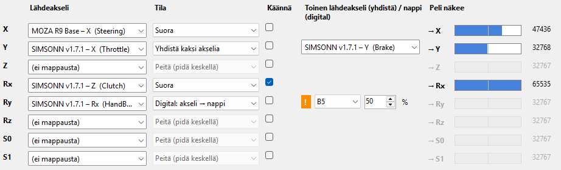

CtrlMuxr
Multiple Controllers → One Input – monta ohjainta, yksi syöte
1. Mikä CtrlMuxr on
Monet vanhat (ja jotkut uudet) pelit osaavat käyttää vain yhtä ohjainta. Jos sinulla on erillinen ratti, polkimet ja vaihteenvaihtaja, peli ei yleensä salli niiden yhdistämistä: valitsit pelin valikossa ratin, vaihteenvaihtaja jää käyttämättä.
CtrlMuxr yhdistää laitteesi niin, että peli näkee yhden ohjaimen, jolla on kaikki sinun tarvitsemasi akselit ja napit.
Voit myös päättää, miten akselit muunnetaan (esimerkiksi kaasu ja jarru samalle akselille tai jarru omalle akselilleen) ja mitä nappeja peli näkee.
2. Miten se toimii
Peli hakee ohjaimet Windowsin DirectInput-ohjelmakirjastosta (DLL-tiedostosta). CtrlMuxr asentaa pelin kansioon oman pienen DLL-tiedoston, jota kutsutaan tässä proxyksi. Peli lataa sen Windowsin omien DLL-tiedostojen tilalle, ja proxy tekee kolme asiaa:
- Lukee oikeat laitteesi (kaksi tai useampi, esim. ratti, polkimet, vaihteenvaihtaja, käsijarru, buttonbox; yhteensä enintään 9 laitetta).
- Yhdistää ne pääohjaimeen (rattiin) sinun asetustesi mukaan: niiden akselit ja napit tulevat ratin akseleiksi ja napeiksi, joten peli näkee yhden ohjaimen.
- Antaa pelille vain pääohjaimen (muut laitteet piilotetaan pelin näkyvistä). Voimapalaute (FFB) kulkee edelleen ratille. Pääohjaimen valitset Lisää peli… -toiminnolla (kohta 3, vaihe 1).
Asetukset ovat pelin kansiossa tiedostossa dinput_proxy.ini. Sovellus kirjoittaa sitä, ja käynnissä oleva peli ottaa useimmat muutokset käyttöön noin puolessa sekunnissa. Vain osa asetuksista (esimerkiksi piilotetut laitteet ja [Caps]) vaatii pelin uudelleenkäynnistyksen.
3. Pika-aloitus
- Vaihe 1 – Lisää peli… (vasemmalla alhaalla): valitse pelin .exe. Sovellus tunnistaa, kuinka peli lukee ohjaimia, ja asentaa oikean proxyn. Valitse ratti, eli ohjain, jossa on voimapalaute (FFB): peli näkee vain sen, ja muut ohjaimet (polkimet, vaihteenvaihtaja) piilotetaan pelistä ja yhdistetään siihen. Valintaa ei voi vaihtaa myöhemmin sovelluksessa: jos haluat toisen ohjaimen, poista proxy asetuksineen (Poista proxy…, sitten Poista listalta ja vastaa Kyllä) ja lisää peli uudelleen.
- Vaihe 2 – Laitteet-välilehti: paina nappia ja nimeä se, liikuta akselia ja kirjoita sille nimi (esim. KAASU, JARRU, KYTKIN, KÄSIJARRU, VAIHDE YLÖS). Nimet voivat olla mitä tahansa, ja ne näkyvät muilla välilehdillä.
- Vaihe 3 – Virtuaalilaite-välilehti: valitse Valmis asettelu ja paina Käytä asettelu, tai valitse jokaiselle pelin akselille (X, Y, Z…) Lähdeakseli käsin. Hyvä alku: ratti X:lle, kaasu Y:lle, jarru Z:lle, kytkin Rx:lle (kaikki Suora). Käyttämättömät akselit: (ei mappausta). Jos nimistäsi ei tunnisteta kaasua ja jarrua, sovellus kysyy, mikä akseli on mikä. Peli näkee -palkit näyttävät tuloksen jo ilman peliä (esikatselu).
- Napit-välilehti: paina Mappaa nimeämäsi napit samoilla numeroilla. Vaihteet ja muut napit siirtyvät ratin napeiksi. Vain kytketyt laitteet otetaan mukaan: jos laitteen nimet ovat tallessa, mutta laite ei ole nyt kytkettynä (eikä peli sitä jo käytä), se ohitetaan ja ilmoitus kertoo sen. Samaan pelin nappiin voi mapata useita lähdenappeja: nappi on painettu, kun mikä tahansa niistä on painettu.
- Jos peli on käynnissä, muutokset tallentuvat heti. Muuten ne ovat luonnoksia, kunnes painat Tallenna.
- Käynnistä peli ja mappaa ohjaimet pelin omassa valikossa. Paina jokaista poljinta ja nappia, kun peli pyytää.
- Sulje peli ja paina Analysoi viimeisin pelikerta…. Painike hehkuu oranssina, kun lokissa on jotain, mikä kannattaa katsoa. Se kertoo havainnot ja ehdottaa, mitä kokeilla, jos jokin ei mappautunut.
- Jos peli on 32-bittinen ja voimapalaute puuttuu: aja Yksinoikeustesti… (ks. kohta 6).
Sovelluksessa on myös Aloita tästä -opaste, jossa on samat vaiheet. Se pysyy näkyvissä, kunnes olet tallentanut ensimmäisen kerran (Piilota opaste piilottaa sen).
4. Välilehdet
- Laitteet
- Näyttää kaikki kytketyt ohjaimet livenä: akselit palkkeina ja arvoina, nappiruudukko (vihreä = painettu). Tässä annat akseleille ja napeille nimet: liikuta akselia tai paina nappia ja kirjoita sille nimi viereiseen kenttään. Samalla välilehdellä näet, mikä akseli liikkui viimeksi.
- Virtuaalilaite
- Pelille näkyvän ohjaimen akselit (X, Y, Z, Rx, Ry, Rz, S0, S1, rivin vasemmassa reunassa) ja niiden Lähdeakseli. Peli näkee -osa (→ X ja palkki) näyttää, mitä peli saa: pelin ollessa käynnissä oikean arvon ja muulloin esikatselun, joka lasketaan laitteistasi samoilla säännöillä kuin proxy (Säädöt-välilehden viiveen kumous ei ole mukana). Harmaa rivi = akseli pysyy keskellä (ei mappausta, Peitä tai Digital). Valmis asettelu täyttää taulukon: nimetyt akselit sellaisenaan (oletus), yhdistetty pedaaliakseli tai erilliset puoliakselit; paina sen jälkeen Käytä asettelu. Asettelu tunnistaa kaasun, jarrun, kytkimen ja käsijarrun akselien nimestä (esim. kaasu, gas, jarru, brk); jos nimiä ei tunnisteta, se kysyy, mikä akseli on mikä. Jos peli vaatii tietyn ratin (Logitech, MOMO, SideWinder), valitse se Identityksi Lisäasetukset-välilehdellä.
- Napit
- Muiden laitteiden napit pelin napeiksi: Lähdenappi → Pelin nappi (B1, B2, …, B32, enintään 48 riviä; näytettävien rivien määrän voi valita: 8, 16, 32 tai 48 muokattavalle pelille; seuraava peli alkaa 8 rivistä tai useammasta, jos sen rivit sitä vaativat). Samalle pelin napille voi antaa useita lähteitä (esim. vaihde ylös kahdesta napista): se on painettu, kun mikä tahansa niistä on painettu.
Lähdelistalla on vain niin monta nappia kuin laitteessa on (enintään 32, eli kaikki, mitä proxy lukee); nimeämäsi ja jo mapatut napit ovat aina listalla, ja valinta Vain nimeämäni napit lyhentää listan niihin. Laite, jota ei ole kytketty, näkyy punaisena ja tekstillä "(ei kytketty)": sen asetuksia voi yhä muokata, mutta peli ei saa siitä arvoja ennen kuin se kytketään (paina Laitteet-välilehdellä Refresh). Oikealla oleva Peli näkee -laatikko muuttuu vihreäksi, kun pelin nappi on painettu. Akseli, joka toimii nappina (käsijarru), tehdään Virtuaalilaite-välilehdellä tilalla Digital. Tyhjennä kaikki tyhjentää taulukon (Virtuaalilaite-välilehden Digital-akselit säilyvät).Pelin nappi, joka on rivin (tai Digital-akselin) kohteena, saa arvonsa vain lähteistään: ratin oma nappi samalla numerolla ei enää pääse peliin. Ratin nappi, jota ei ole mapattu mihinkään, kulkee pelille sellaisenaan. Jos haluat ratin oman napin toimivan myös, lisää rivi, jossa ratin oma nappi on ylimääräinen lähde (esim. Moza B2 → B2).
Pieni oranssi ! ilmestyy, kun Napit-rivi ja Digital-akseli käyttävät samaa pelin nappia. - Säädöt
- Yhden akselin tuntuma: kuollut alue (dz), käyrä (expo), vahvistus (gain), anti-deadzone (adz), viiveen kumous (lead) ja keskipiste. Jokaisella rivillä on Nollaa-painike.
- Lisäasetukset
- Asetuksia peleille, jotka eivät käyttäydy normaalisti: nappimäärän raja (MaxButtons), ominaisuuslippujen piilotus (ClearFlags), pelin oman kuolleen alueen ohitus, yksinoikeuden varajärjestely, voiman lähetys magnitudina (GainAsMagnitude), voimapalautteen voimakkuus (Boost), ratin ilmoittama identiteetti (Logitech) ja laitetyyppi. Nämä ovat korjauksia ongelmatilanteisiin: jos peli toimii, älä muuta mitään. Jokaisella asetuksella on lyhyt selitys, ja ?-merkistä (hiiri päälle tai napsautus) aukeaa pidempi selitys sekä tieto siitä, tuleeko asetus voimaan heti vai vaatiiko se pelin uudelleenkäynnistyksen.
- INI (teksti)
- Asetustiedosto sellaisenaan. Voit muokata käsin, jos tiedät mitä teet.
- Loki
- Proxyn kirjoittama loki pelikerrasta. Voit vierittää sitä pelin ollessa käynnissä: se ei hyppää loppuun, jos olet vierittänyt ylös.
Vasemman reunan painikkeet: Lisää peli…, Ohje (F1), Poista proxy… (poistaa proxyn pelin kansiosta; asetukset jäävät talteen; kun proxya ei ole, painike on Asenna proxy…) ja Poista listalta. Yläpalkissa: Tallennukset ja varmistukset…, Yksinoikeustesti… ja Kumoa viimeisin tallennus.
5. Akselien tilat
| Tila | Mitä se tekee | Käytä, kun |
|---|---|---|
| Suora | Lähde menee sellaisenaan. Poljin: lepo = minimi, pohjassa = maksimi. | Peli ottaa yksittäisen poljinakselin. Aloita tästä. |
| Puoliakseli + | Lepo keskellä, pohjassa maksimi. | Peli tulkitsee akselin minimin "painetuksi", tai haluat jokaiselle polkimelle oman akselin. |
| Puoliakseli − | Lepo keskellä, pohjassa minimi. | Kuten yllä, vastakkaiseen suuntaan. |
| Jaa: yläpuolisko / alapuolisko | Lähteen ylä- tai alapuolisko levitetään koko alueelle. | Yksi keskitetty akseli (esim. yhdistetty poljin) halutaan jakaa kahdeksi. Ei erillisille poljinakseleille. |
| Yhdistä kaksi akselia | Kaasu ja jarru samalle akselille: kaasu vetää kohti minimiä, jarru kohti maksimia, lepo keskellä. | Peli odottaa yhtä poljinakselia ("Logitech-tyyli"). |
| Peitä (pidä keskellä) | Peli saa aina keskiarvon. Sama kuin valinta (ei mappausta). | Laitteen turhat tai staattiset akselit, jotka muuten näyttäisivät pelille "painetuilta". |
| Digital: akseli → nappi | Akseli toimii nappina: nappi on painettu, kun akseli ylittää valitsemasi kohdan. | Käsijarru, kun vanha peli ei ota sitä akselina. |
Käännä kääntää suunnan. Tilassa Yhdistä kaksi akselia se vaihtaa kaasun ja jarrun puoliskot keskenään kokonaisuutena (polkimia ei voi kääntää erikseen). Peitetty akseli ei liiku pelin valikossa, joten peitä akseli vasta, kun olet mappannut kaiken muun.
Esimerkki: ratti, polkimet ja vaihteenvaihtaja yhdeksi ohjaimeksi

- X – Ohjaus suoraan pelin akselille X.
- Y – Jarru- ja kaasuakselit yhdistettynä pelin akselille Y (Yhdistä kaksi akselia).
- Z – Pelin akseli Z on piilotettu (Peitä): peli saa siltä aina keskiarvon.
- Rx – Kytkinakseli käännettynä pelin akselille Rx (Käännä valittuna).
- Ry – Käsijarruakseli muutettu pelille digitaaliseksi napiksi B5 (Digital: akseli → nappi; nappi on painettu, kun akseli ylittää 50 %).
Oranssi huutomerkki  kertoo, että B5-nappi on jo mapattu Napit-välilehdellä toiseenkin toimintoon.
kertoo, että B5-nappi on jo mapattu Napit-välilehdellä toiseenkin toimintoon.
Pelin saaminen näkemään tunnettu ratti (Identity)
Jotkin pelit tuntevat vain tiettyjä rattia ja antavat niille kunnolliset oletusohjaukset. Lisäasetukset-välilehdellä voit asettaa ratin ilmoittamaan itsensä Logitech Driving Force Pro:ksi, Logitech MOMO Racingiksi tai Microsoft SideWinder Force Feedback Wheeliksi. Tämä vaihtaa vain nimen ja ID:n, jonka peli näkee: akselit (Virtuaalilaite-välilehti) ja napit (Napit-välilehti) pysyvät sellaisina kuin ne asetit, ja nappimäärän voi rajata MaxButtonsilla. Identity ja MaxButtons vaativat pelin uudelleenkäynnistyksen.
Driving Force Pro -ID on arvaus; MOMO Racing -ID (046D:CA03) on luettu oikealta ratilta ja SideWinder-ID (045E:0034) laitetietokannasta (yksi raportti). Kaikki pelit eivät hyväksy niitä.
Identity-listan rattimallit (kuvina pakkaukset):


6. Jos peli ei hyväksy ohjainta tai akselia
Jokin akseli tai nappi ei mappaudu pelin valikossa, vaikka lokissa arvot liikkuvat? Kokeile tässä järjestyksessä (Analysoi viimeisin pelikerta… ehdottaa samoja):
- Toinen pelin akseli. Siirrä poljin toiselle akselille (esim. Z → Rx). Joskus peli ei ota tiettyä akselia tiettyyn tehtävään.
- Toinen tila. Suora ↔ Puoliakseli +.
- Yhdistetty poljinakseli kaasulle ja jarrulle (Yhdistä kaksi akselia).
- Käsijarru nappina (Digital), jos peli ei ota sitä analogisena.
- Napin numero. Kokeile toista numeroa. Matalat numerot toimivat yleensä paremmin kuin korkeat. Vältä ratin omia nappeja: anna mapatuille napeille numerot, joita ratti ei käytä.
- Jos mikään ei auta:
[Caps] MaxButtons=12jaClearFlags=AINI-välilehdellä.
"Tätä peliä ei voi käsitellä automaattisesti"
Lisää peli… katsoo, mitä ohjainrajapintaa pelin ohjelma tuo, ja valitsee sen mukaan proxy-DLL:n:
| Peli käyttää | Käytettävä proxy |
|---|---|
DirectInput 1–7 (DINPUT.dll) | dinput.dll |
DirectInput 8 (DINPUT8.dll) | dinput8.dll |
vain winmm (joyGetPosEx), ja peli tuo myös DINPUT.dll:n tai MSACM32.dll:n | dinput.dll tai msacm32.dll |
Jos peli ei tuo mitään näistä, sovellus ilmoittaa, ettei se voi käsitellä peliä automaattisesti. Yleisin tapaus on vanha peli, joka lukee ohjainta vain winmm:n kautta eikä lataa DINPUT.dll:ää eikä MSACM32.dll:ää: proxylla ei ole keinoa tulla ladatuksi, joten tällaista peliä ei tueta. Saman pelin versiot voivat poiketa: paikattu versio voi käyttää DirectInputia, vaikka alkuperäinen käyttää vain winmm:ää. Pelin omissa DLL-tiedostoissa (esim. moottori-DLL) tehty ohjainluku tunnistetaan myös, jos DLL on pelin kansiossa.
Voimapalaute puuttuu tai ratti vetää yhteen suuntaan
Jos ratti vetää täydellä voimalla yhteen suuntaan (esimerkiksi Colin McRae Rally -peleissä heti pätkän alussa tai törmäyksen jälkeen), kokeile Lisäasetukset-välilehden kytkintä Voima magnitudina (GainAsMagnitude) ja käynnistä peli uudelleen. Jotkin ratit (esim. Moza R9) eivät noudata käynnissä olevan efektin gain-muutoksia, ja kytkin lähettää voimakkuuden magnitudina. Jos veto on yhä epäsymmetristä (enemmän yhteen suuntaan), kokeile lisäksi Estä sini-efekti (BlockSine). Colin McRae Rallyssa (Moza R9) se paransi voimien symmetriaa selvästi; hintana moottorin ja tien tärinä poistuu. Muu: ks. alla.
Jos pelin voimapalaute (FFB) ei toimi, aja ensin Yksinoikeustesti…. Kerran käynnissä oleva Steam-asiakas esti 32-bittisiä pelejä saamasta rattia yksinoikeudella; Steamin sulkeminen kokonaan korjasi asian. Syytä ei löytynyt, eikä esto ole toistunut: myöhemmissä testeissä yksinoikeus onnistui Steamin ollessa käynnissä sekä Steam Inputin ollessa pois että päällä (generic-, Xbox- ja Switch Pro -ohjaimet). Jos testi epäonnistuu ja Steam on käynnissä, ota ensin pois päältä Steam → Settings → Controller → Advanced Settings → Enable Steam Input for …; jos se ei riitä, sulje Steam kokonaan taustalta (tehtäväpalkin kuvake → Exit) ja testaa uudelleen.
Huomaa: Steam voi muuttaa ohjainten käyttäytymistä: Steam Input voi uudelleenmäärittää, jäljitellä tai ottaa ohjaimia haltuunsa, myös pelikohtaisesti. Jos Steamistä käynnistetty peli käyttäytyy ohjaimella oudosti, tarkista Steam → Settings → Controller ja pelin Properties → Controller. Yksinoikeustestit antoivat saman tuloksen näillä asetuksilla päällä ja pois.
Lokin lukeminen
Loki-välilehti (ja pelin kansion dinput_<numero>.log) näyttää, mitä proxy teki pelikerran aikana. Katsomisen arvoiset rivit:
Config: …– asetukset, jotka proxy luki pelin käynnistyessä (piilotetut laitteet, FFB-valinnat, mappaukset, identiteetti). Jos odottamaasi riviä ei ole, asetusta ei luettu: osa vaatii pelin uudelleenkäynnistyksen.Loaded real …\dinput.dlljaDirectInputCreateA ver=700– proxy latasi Windowsin oman kirjaston ja peli pyysi DirectInputia (700 = versio 7, 500 = versio 5).winmm IAT hooks in game module: joyGetPosEx=1– winmm:n kautta joystickia lukevalla pelillä: 1 = proxy kiinnittyi kutsuun, 0 = ei kiinnittynyt.Enum: … -> hidden from game– laitteet, joita pelille ei näytetty. Ratin pitäisi olla luettelossa ilman tätä merkintää.SetDataFormat … dataSize=80– missä muodossa peli haluaa ohjaimen tiedot (80 = yleinen muoto, 272 = suurempi, jossa 128 nappia).SetProperty-rivit näyttävät pelin asettaman akselialueen ja kuolleen alueen.GetCapabilities … FFB=yes– ilmoittaako ratti voimapalautteesta ja kuinka monta nappia pelille kerrottiin (esim.128 -> 8, kun MaxButtons rajoittaa).CreateEffect– peli loi voimapalauteefektejä. Jos näitä rivejä ei ole pelissä, jossa pitäisi olla FFB, yksinoikeus puuttuu.- Proxy kirjaa
Acquire-rivin vain, kun tulos muuttuu; toistot lasketaan ((repeated 500 more times)). Joshr=80070005näkyy hetken ja sen jälkeen tuleehr=0, pelin ikkuna ei todennäköisesti ollut etualalla (esim. Alt+Tab); analyysi antaa silloin vain lyhyen huomautuksen.Acquire … hr=0tarkoittaa, että peli sai laitteen; muut arvot eivät aina ole virheitä, koska pelit yrittävät monta kertaa.hr=80070005(heksadesimaalimuotoinen virhekoodi) tarkoittaa käytön estoa: aja Yksinoikeustesti…. Rivit, joissa onfallback leveltaiupgrade level, näyttävät proxyn siirtyvän lempeämpään käyttötilaan ja yrittävän yksinoikeutta uudelleen (Lisäasetukset-välilehden AutoCoop-varatila).
Milloin proxy lokittaa. Proxy lokittaa vain, kun CtrlMuxr on käynnissä, joten valmis asetus ei hidasta peliä. Käynnistä CtrlMuxr ennen peliä, muuten ensimmäiset rivit (Config:, CreateDevice) puuttuvat. Jos haluat lokittaa pelin ilman CtrlMuxria, laita sille päälle Lokita myös kun CtrlMuxr on kiinni (valintaruutu Analysoi viimeisin pelikerta… -napin alla). Ongelmat (epäonnistuneet kutsut, ohjainta ei löydy, virheellinen INI-rivi) tallentuvat aina: lokiin tai, kun lokitus on pois, pelin kansion tiedostoon dinput_errors.log (enintään 256 kt). Peliä, joka kutsuu jotain hyvin tiheästi, lokitetaan enintään noin 200 riviä sekunnissa; loki kertoo silloin (N lines left out: more than 200 per second). Rivit, joiden alussa on ERROR, ovat ongelmia; kun ongelma päättyy (laite palaa, Acquire toimii taas), sekin tallentuu.
Analysoi viimeisin pelikerta… -ikkuna lukee samaa lokia ja tekee yhteenvedon; lue lokia itse, kun analyysi ei löydä mitään.
Pelin kuvaus ei auta?
Lokinäkymä ja Analysoi-ikkuna kertovat, mitä proxy antoi pelille. Se ei näe, mitä peli hyväksyi, joten ikkunan kysymykset ("hyväksyi / ei hyväksynyt") ovat osa analyysiä.
7. Missä tiedostot ovat
| Paikka | Sisältö |
|---|---|
| Pelin kansio | Proxy-DLL (dinput.dll, dinput8.dll tai msacm32.dll), työkopio dinput_proxy.ini ja lokit dinput_*.log. |
Sovelluksen data\games\<peli>\ | Asetusten pääkopio, automaattiset varmistukset (5 uusinta) ja omat tallennukset. Säilyy, vaikka pelin kansio siivotaan. |
Sovelluksen data\proxy\ | Proxy-DLL:t (x86 ja x64), joista Lisää peli kopioi oikean pelin kansioon. |
Sovelluksen devices.ini, games.ini, settings.ini | Antamasi nimet, pelilista sekä sovelluksen asetukset (kieli, aloitusopaste). |
Synkronointi: pelin kansion ja sovelluksen kopio pidetään samana. Jos vain toinen on muuttunut, se voittaa. Jos molemmat, uudempi voittaa ja toinen tallentuu varmuuskopioksi. Mitään ei korvata ilman varmuuskopiota.
Proxyn päivitys: jos sovellus varoittaa, että pelikansion proxy-tiedosto on eri versio kuin sovelluksen oma, paina varoituksen vieressä olevaa Päivitä proxy -painiketta (pelin pitää olla suljettuna). Asetuksia ei muuteta.
Proxyn poisto: Poista proxy… poistaa DLL:n ja työkopion pelin kansiosta, ja palauttaa pelin oman DLL:n, jos asennus tallensi sellaisen. Asetukset jäävät sovellukseen. Kun peli on yhä listalla, sama painike muuttuu muotoon Asenna proxy…: se asentaa proxyn takaisin ja palauttaa viimeisimmät asetukset. Poista listalta poistaa pelin listalta (Poista poistaa myös tallennetut asetukset, Säilytä säilyttää ne; ne palaavat, jos lisäät pelin uudelleen samalla nimellä). Kansiota, joka on jo listalla, ei lisätä toiseen kertaan; löytynyt asetustiedosto kansiossa, joka ei ole listalla, otetaan käyttöön sen pääohjaimella.
Tallennukset ja varmistukset
Tallennukset ja varmistukset… (yläpalkki) listaa pelin asetusten aiemmat tilat: automaattiset varmistukset (sovellus tekee ne itse ennen muutoksia ja säilyttää 5 uusinta) ja omat tallennukset (nimeät ja tallennat ne itse, ja ne säilyvät, kunnes poistat ne). Valitse yksi nähdäksesi, mitä sen palauttaminen muuttaisi nykytilaan verrattuna. Palautus toimii kuten mikä tahansa muokkaus: käynnissä olevalle pelille se tallentuu heti, muuten se jää luonnokseksi, kunnes painat Tallenna, ja tallennuksen jälkeen sen voi perua Kumoa viimeisin tallennus -painikkeella. Jokainen painallus peruu yhden tallennuksen (sulkeissa oleva luku kertoo, montako on jäljellä, enintään 30); tallennukset muistetaan vain pelin vaihtoon tai sovelluksen sulkemiseen asti, joten vanhemmille tiloille käytä automaattisia varmistuksia. Kun jokin toimii, tallenna se siellä omaksi tallennukseksi (nimetty kopio toimivasta tilasta). Jos vaihdat toiseen peliin tallentamattoman luonnoksen kanssa, sovellus kysyy, tallennetaanko, hylätäänkö vai perutaanko.
8. Sanasto
- Proxy
- Pieni DLL, jonka CtrlMuxr asentaa pelin kansioon. Se on "välittäjä" pelin ja Windowsin DirectInputin välissä: se lukee oikeat laitteesi ja antaa pelille yhden virtuaalisen ohjaimen. Se ei muuta peliä tai Windowsia.
- DLL
- Ohjelmatiedosto (kirjasto), jonka ohjelmat lataavat käyttöönsä. Pelin kansion DLL ladataan ennen Windowsin omaa.
- DirectInput / winmm
- Windowsin kaksi tapaa lukea peliohjaimia. Sovellus tunnistaa, kumpaa peli käyttää, ja asentaa oikean proxyn.
- INI
- Tekstimuotoinen asetustiedosto (
dinput_proxy.ini). - Akseli
- Jatkuva arvo (ratin kulma, poljin). Virtuaaliohjaimella on kahdeksan: X, Y, Z, Rx, Ry, Rz, S0, S1.
- Peitä (maski)
- Akseli, jonka arvoksi pelille annetaan aina keskiarvo. Piilottaa laitteen turhat akselit.
- Puoliakseli
- Poljin, jonka lepoasento on akselin keskellä.
- Jaa / Yhdistä
- Yhden akselin jako kahdeksi / kahden akselin yhdistäminen yhdeksi.
- Digital
- Akseli, joka toimii nappina kynnyksen (%) ylittyessä.
- Oma deadzone (dz)
- Keskialue, jolla pienet liikkeet ohitetaan.
- Käyrä / expo
- Pehmentää vastetta keskellä.
- Vahvistus (gain)
- Ulostulon kerroin (100 % = muuttumaton).
- Anti-deadzone (adz)
- Kumoaa pelin oman kuolleen alueen.
- Viiveen kumous (lead)
- Kumoaa pelin syötteen tasoituksen (hidas tuntuma).
- Keskipiste
- Raakaarvo, jonka peli katsoo keskikohdaksi (yleensä 32768).
- Esikatselu
- Se, mitä Peli näkee näyttää silloin, kun peli ei ole käynnissä: sovellus laskee tuloksen laitteistasi samoilla säännöillä kuin proxy.
- FFB
- Voimapalaute (Force Feedback): pelin lähettämät voimat ratille.
- Yksinoikeus (exclusive access)
- Pelin tapa varata ohjain itselleen. FFB vaatii sen.
- Heksadesimaali (heksa)
- Lukujärjestelmä, jossa on numerot 0–9 ja kirjaimet A–F, missä A = 10 ja F = 15. Sovellus näyttää osan luvuista heksana: laitetunnisteet (VID:PID, esim.
346E:0002), lokin virhekoodit (80070005) jaClearFlags-arvon (A= 10). Kirjoita ne sellaisina kuin ne näytetään, heksana. - Oma tallennus
- Nimellä tallennettu kopio pelin asetuksista, josta voit palata siihen myöhemmin.